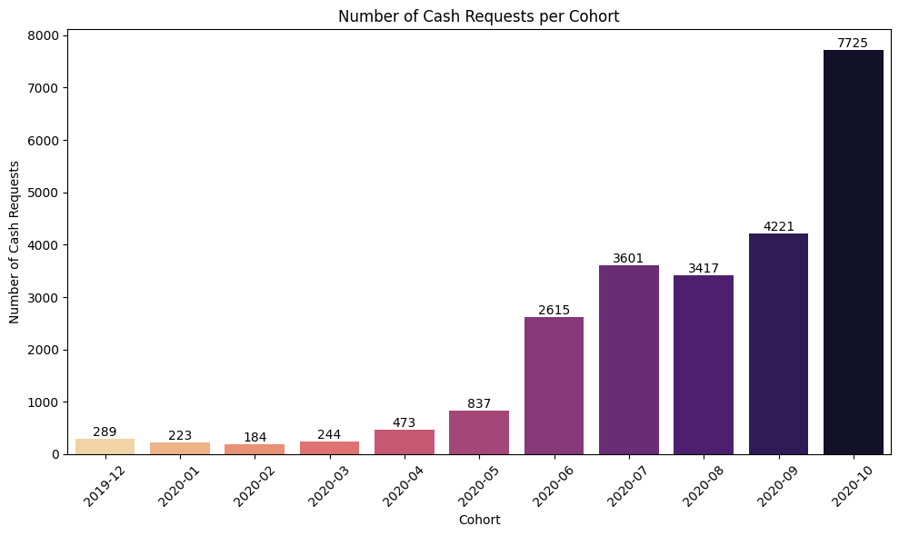
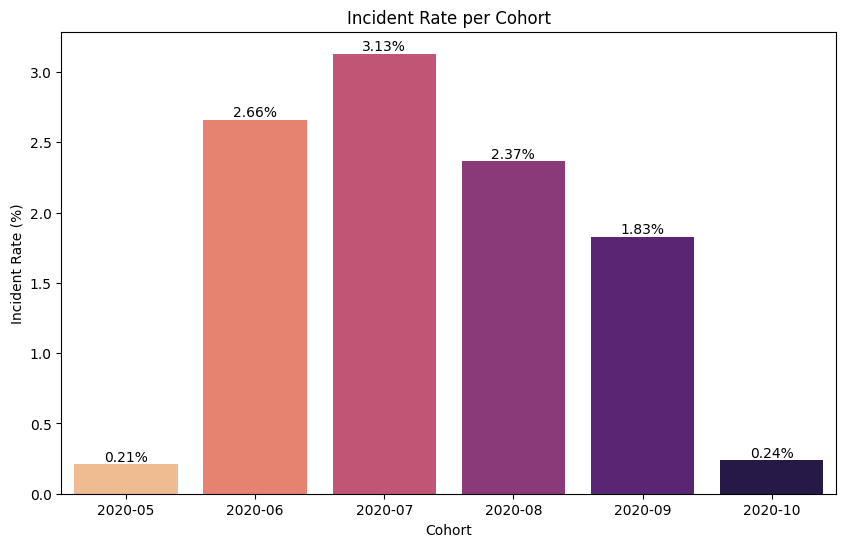
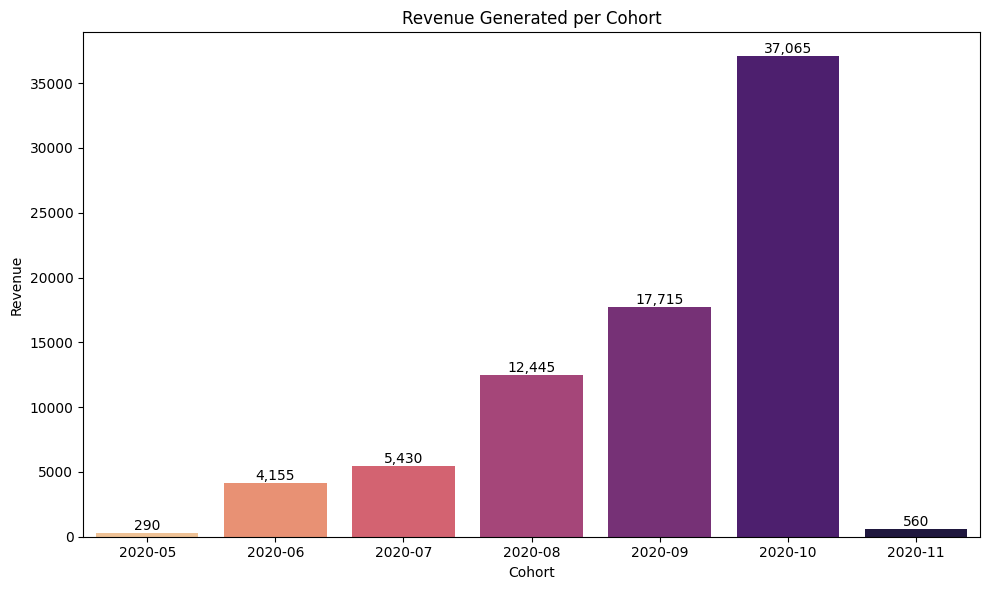
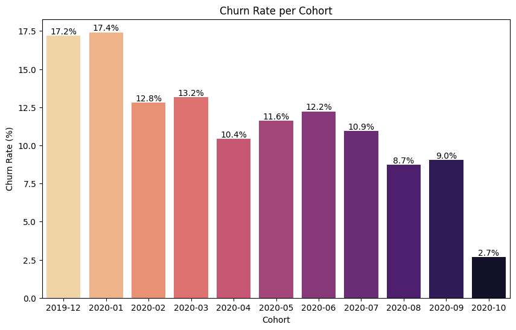

# To avoid confusion, we will disable warnings
import warnings
warnings.filterwarnings('ignore')Cohort Analysis for Ironhack Payments
Exploratory Data Analysis
First, let’s make sure we have the required modules
# uncomment the rows bellow to install the modules
# !pip install numpy
# !pip install pandas
# !pip install seaborn
# !pip install matplotlib
Tip
When using environments, replace !pip with %pip
Now let’s import the modules
import numpy as np
import pandas as pd
import seaborn as sns
import matplotlib.pyplot as pltAnd now let’s load the CSV files we’ll be using
cash_df = pd.read_csv('project_dataset/extract - cash request - data analyst.csv')
fees_df = pd.read_csv('project_dataset/extract - fees - data analyst - .csv')Now we can start our exploratory analysis.
Note
With pandas we can use .head() or .tail(), .info(), .shape and .describe() to get a quick view of the data.
We can also use .sample(<number of samples>) to see some randomly selected rows.
cash_df.shape(23970, 16)cash_df.sample(5)| id | amount | status | created_at | updated_at | user_id | moderated_at | deleted_account_id | reimbursement_date | cash_request_received_date | money_back_date | transfer_type | send_at | recovery_status | reco_creation | reco_last_update | |
|---|---|---|---|---|---|---|---|---|---|---|---|---|---|---|---|---|
| 9181 | 258 | 100.0 | money_back | 2019-12-19 18:47:48.08997+00 | 2020-11-04 12:55:39.86506+00 | 1875.0 | 2019-12-20 17:33:48.770853+00 | NaN | 2020-01-02 23:00:00+00 | 2019-12-24 | 2020-07-07 22:00:00+00 | regular | NaN | completed | 2020-04-10 21:38:11.508768+00 | 2020-07-14 15:07:29.791499+00 |
| 5372 | 13291 | 100.0 | rejected | 2020-08-20 03:02:23.506065+00 | 2020-08-20 09:23:50.731707+00 | 18856.0 | 2020-08-20 09:23:50.725651+00 | NaN | 2020-09-07 22:00:00+00 | NaN | NaN | regular | 2020-08-27 03:02:23.457008+00 | NaN | NaN | NaN |
| 1260 | 2853 | 100.0 | rejected | 2020-06-10 05:10:41.029379+00 | 2020-06-10 15:14:13.967513+00 | 6925.0 | 2020-06-10 15:14:13.962455+00 | NaN | 2020-07-05 22:00:00+00 | NaN | NaN | regular | NaN | NaN | NaN | NaN |
| 5093 | 12419 | 100.0 | rejected | 2020-08-14 03:51:40.857999+00 | 2020-08-14 08:09:57.892999+00 | NaN | 2020-08-14 08:09:57.888866+00 | 4079.0 | 2020-09-07 22:00:00+00 | NaN | NaN | instant | 2020-08-21 03:51:40.805214+00 | NaN | NaN | NaN |
| 15185 | 14958 | 100.0 | money_back | 2020-09-07 12:22:49.047822+00 | 2020-12-18 13:10:28.23736+00 | 3358.0 | 2020-09-07 13:23:58.641113+00 | NaN | 2020-10-01 22:00:00+00 | 2020-09-08 | 2020-10-02 18:59:02.147202+00 | instant | 2020-09-14 12:22:48.998382+00 | NaN | NaN | NaN |
cash_df.info()<class 'pandas.core.frame.DataFrame'>
RangeIndex: 23970 entries, 0 to 23969
Data columns (total 16 columns):
# Column Non-Null Count Dtype
--- ------ -------------- -----
0 id 23970 non-null int64
1 amount 23970 non-null float64
2 status 23970 non-null object
3 created_at 23970 non-null object
4 updated_at 23970 non-null object
5 user_id 21867 non-null float64
6 moderated_at 16035 non-null object
7 deleted_account_id 2104 non-null float64
8 reimbursement_date 23970 non-null object
9 cash_request_received_date 16289 non-null object
10 money_back_date 16543 non-null object
11 transfer_type 23970 non-null object
12 send_at 16641 non-null object
13 recovery_status 3330 non-null object
14 reco_creation 3330 non-null object
15 reco_last_update 3330 non-null object
dtypes: float64(3), int64(1), object(12)
memory usage: 2.9+ MBfees_df.shape(21061, 13)fees_df.sample(5)| id | cash_request_id | type | status | category | total_amount | reason | created_at | updated_at | paid_at | from_date | to_date | charge_moment | |
|---|---|---|---|---|---|---|---|---|---|---|---|---|---|
| 18778 | 16762 | 23831.0 | instant_payment | rejected | NaN | 5.0 | Instant Payment Cash Request 23831 | 2020-10-23 22:54:09.104657+00 | 2020-10-23 22:54:09.104685+00 | 2020-12-12 19:59:47.929491+00 | NaN | NaN | after |
| 20144 | 10917 | 6606.0 | incident | cancelled | month_delay_on_payment | 5.0 | month delay on payment - 10/2020 | 2020-10-04 23:53:57.587754+00 | 2020-12-15 17:07:43.273605+00 | 2020-10-30 04:39:13.484808+00 | NaN | NaN | after |
| 9514 | 10886 | 18257.0 | postpone | cancelled | NaN | 5.0 | Postpone Cash Request 18257 | 2020-10-04 20:55:39.329791+00 | 2020-10-13 14:25:03.272754+00 | NaN | 2020-10-05 22:00:00+00 | 2020-10-16 10:00:00+00 | after |
| 16965 | 12644 | 20460.0 | instant_payment | accepted | NaN | 5.0 | Instant Payment Cash Request 20460 | 2020-10-11 13:09:38.523214+00 | 2020-10-13 14:25:16.631233+00 | 2020-11-03 19:42:16.315178+00 | NaN | NaN | after |
| 6439 | 21066 | 20511.0 | postpone | accepted | NaN | 5.0 | Postpone Cash Request 20511 | 2020-11-01 15:26:49.073646+00 | 2020-11-01 15:26:53.086795+00 | 2020-11-01 15:26:53.362627+00 | 2020-11-04 22:00:00+00 | 2020-11-10 11:00:00+00 | before |
fees_df.info()<class 'pandas.core.frame.DataFrame'>
RangeIndex: 21061 entries, 0 to 21060
Data columns (total 13 columns):
# Column Non-Null Count Dtype
--- ------ -------------- -----
0 id 21061 non-null int64
1 cash_request_id 21057 non-null float64
2 type 21061 non-null object
3 status 21061 non-null object
4 category 2196 non-null object
5 total_amount 21061 non-null float64
6 reason 21061 non-null object
7 created_at 21061 non-null object
8 updated_at 21061 non-null object
9 paid_at 15531 non-null object
10 from_date 7766 non-null object
11 to_date 7766 non-null object
12 charge_moment 21061 non-null object
dtypes: float64(2), int64(1), object(10)
memory usage: 2.1+ MBWe already notice that we have some columns with numbers (
amountincash_dfandtotal_amountinfees_df), datetime (created_at,updated_atetc) and object (status,transfer_typeetc).
Let’s list theunique()values for latter.
print(f"status: {cash_df['status'].unique()}")
print(f"transfer_type: {cash_df['transfer_type'].unique()}")
print(f"recover_status: {cash_df['recovery_status'].unique()}")status: ['rejected' 'money_back' 'canceled' 'active' 'direct_debit_rejected'
'transaction_declined' 'direct_debit_sent']
transfer_type: ['regular' 'instant']
recover_status: [nan 'completed' 'pending' 'pending_direct_debit' 'cancelled']
Important
Let’s make a note that we have some nan (not-a-number) values - we’ll get to that in a bit.
print(f"type: {fees_df['type'].unique()}")
print(f"status: {fees_df['status'].unique()}")
print(f"category: {fees_df['category'].unique()}")
print(f"charge_moment: {fees_df['charge_moment'].unique()}")type: ['instant_payment' 'incident' 'postpone']
status: ['rejected' 'accepted' 'cancelled' 'confirmed']
category: [nan 'rejected_direct_debit' 'month_delay_on_payment']
charge_moment: ['after' 'before']Data Quality Analysis Report
Now that we’ve got an idea of the data, let’s check if there are any missing (empty or
null) values in our dataframes.
We can use.isna()(or its alias -isnull()) and the inversenotna()to check if a value is null.
cash_df.isna().sum() # by appending .sum() we get a sum of Null values, per rowid 0
amount 0
status 0
created_at 0
updated_at 0
user_id 2103
moderated_at 7935
deleted_account_id 21866
reimbursement_date 0
cash_request_received_date 7681
money_back_date 7427
transfer_type 0
send_at 7329
recovery_status 20640
reco_creation 20640
reco_last_update 20640
dtype: int64We notice that the
user_idcolumn has 2103nanvalues - but we also have adeleted_account_idcolumn which contains id’s for deleted user accounts.
Let’s check if there are rows where bothuser_idanddeleted_account_idare empty.
(cash_df['user_id'].isna() & (cash_df['deleted_account_id'].isna())).sum()0For the rest of the columns
nanvalues are not necessarily a problem, so we won’t investigate them further.
Now let’s look atfees_df
fees_df.isna().sum()id 0
cash_request_id 4
type 0
status 0
category 18865
total_amount 0
reason 0
created_at 0
updated_at 0
paid_at 5530
from_date 13295
to_date 13295
charge_moment 0
dtype: int64We notice there are 4 rows that don’t have a value for
cash_request_id
Tip
The isna() function creates a mask with True/False where the values in the dataframe are Null. We can then use this mask to select rows from the dataframe
fees_df[fees_df['cash_request_id'].isna()]| id | cash_request_id | type | status | category | total_amount | reason | created_at | updated_at | paid_at | from_date | to_date | charge_moment | |
|---|---|---|---|---|---|---|---|---|---|---|---|---|---|
| 1911 | 2990 | NaN | instant_payment | cancelled | NaN | 5.0 | Instant Payment Cash Request 11164 | 2020-08-06 22:42:34.525373+00 | 2020-11-04 16:01:17.296048+00 | NaN | NaN | NaN | after |
| 1960 | 3124 | NaN | instant_payment | cancelled | NaN | 5.0 | Instant Payment Cash Request 11444 | 2020-08-08 06:33:06.244651+00 | 2020-11-04 16:01:08.332978+00 | NaN | NaN | NaN | after |
| 4605 | 5185 | NaN | instant_payment | cancelled | NaN | 5.0 | Instant Payment Cash Request 11788 | 2020-08-26 09:39:37.362933+00 | 2020-11-04 16:01:36.492576+00 | NaN | NaN | NaN | after |
| 11870 | 3590 | NaN | instant_payment | cancelled | NaN | 5.0 | Instant Payment Cash Request 12212 | 2020-08-12 14:20:06.657075+00 | 2020-11-04 16:01:53.106416+00 | NaN | NaN | NaN | after |
As the
cash_request_idis a reference to theidfrom thecash_dfdataframe, and there are only 4 rows, we can safely remove/ignore these instances.
Tip
We can use the inverse method .notna() and re-assign fees_df to the dataframe without Null values.
fees_df = fees_df[fees_df['cash_request_id'].notna()]
fees_df.isna().sum()id 0
cash_request_id 0
type 0
status 0
category 18861
total_amount 0
reason 0
created_at 0
updated_at 0
paid_at 5526
from_date 13291
to_date 13291
charge_moment 0
dtype: int64Metrics Analysis
Before we can actually do our analysis, we need to prepare the dataframes for easier manipulation.
For this we’ll convert the datetime values to the correct type.
datetime_columns_cash = ['created_at', 'updated_at', 'moderated_at', 'reimbursement_date',\
'cash_request_received_date', 'money_back_date', 'send_at',\
'reco_creation', 'reco_last_update']
for column in datetime_columns_cash:
cash_df[column] = pd.to_datetime(cash_df[column]) # in python3.11.8 we need to add format='mixed'cash_df.info()<class 'pandas.core.frame.DataFrame'>
RangeIndex: 23970 entries, 0 to 23969
Data columns (total 16 columns):
# Column Non-Null Count Dtype
--- ------ -------------- -----
0 id 23970 non-null int64
1 amount 23970 non-null float64
2 status 23970 non-null object
3 created_at 23970 non-null datetime64[ns, UTC]
4 updated_at 23970 non-null datetime64[ns, UTC]
5 user_id 21867 non-null float64
6 moderated_at 16035 non-null datetime64[ns, UTC]
7 deleted_account_id 2104 non-null float64
8 reimbursement_date 23970 non-null datetime64[ns, UTC]
9 cash_request_received_date 16289 non-null datetime64[ns]
10 money_back_date 16543 non-null datetime64[ns, UTC]
11 transfer_type 23970 non-null object
12 send_at 16641 non-null datetime64[ns, UTC]
13 recovery_status 3330 non-null object
14 reco_creation 3330 non-null datetime64[ns, UTC]
15 reco_last_update 3330 non-null datetime64[ns, UTC]
dtypes: datetime64[ns, UTC](8), datetime64[ns](1), float64(3), int64(1), object(3)
memory usage: 2.9+ MBdatetime_columns_fees = ['created_at', 'updated_at', 'paid_at', 'from_date', 'to_date']
for column in datetime_columns_fees:
fees_df[column] = pd.to_datetime(fees_df[column])fees_df.info()<class 'pandas.core.frame.DataFrame'>
Int64Index: 21057 entries, 0 to 21060
Data columns (total 13 columns):
# Column Non-Null Count Dtype
--- ------ -------------- -----
0 id 21057 non-null int64
1 cash_request_id 21057 non-null float64
2 type 21057 non-null object
3 status 21057 non-null object
4 category 2196 non-null object
5 total_amount 21057 non-null float64
6 reason 21057 non-null object
7 created_at 21057 non-null datetime64[ns, UTC]
8 updated_at 21057 non-null datetime64[ns, UTC]
9 paid_at 15531 non-null datetime64[ns, UTC]
10 from_date 7766 non-null datetime64[ns, UTC]
11 to_date 7766 non-null datetime64[ns, UTC]
12 charge_moment 21057 non-null object
dtypes: datetime64[ns, UTC](5), float64(2), int64(1), object(5)
memory usage: 2.2+ MBNow that our dataframes are cleaned and the values are of the correct type, we can start our analysis.
1. Frequency of Service Usage
Understand how often users from each cohort utilize IronHack Payments’ cash advance services over time.
To determine the utilisation of the IronHack Payments’ service, we first need to group users in cohorts.
We will use thecreated_atfield to generate the user cohorts, split by months.
cash_df['cohort'] = cash_df['created_at'].dt.to_period('M')cohort_counts = cash_df.groupby('cohort').size()
cohort_countscohort
2019-11 1
2019-12 289
2020-01 223
2020-02 184
2020-03 244
2020-04 473
2020-05 837
2020-06 2615
2020-07 3601
2020-08 3417
2020-09 4221
2020-10 7725
2020-11 140
Freq: M, dtype: int64By analysing the cohort sizes, we can deduct that the data is incomplete for the first (2019-11) and last (2020-11) months - to avoid confusion we will hide these months from our plot.
cohort_counts = cohort_counts.iloc[1:-1]plt.figure(figsize=(10, 6))
freq_use = sns.barplot(x=cohort_counts.index.astype(str), y=cohort_counts.values, palette='magma_r')
plt.title('Number of Cash Requests per Cohort')
plt.xlabel('Cohort')
plt.ylabel('Number of Cash Requests')
plt.xticks(rotation=45)
plt.tight_layout()
# we can also show the values directly in the plot
for i in freq_use.containers:
freq_use.bar_label(i,)
plt.show()
2. Incident Rate
Determine the incident rate, specifically focusing on payment incidents, for each cohort. Identify if there are variations in incident rates among different cohorts.
To determine the Incident Rate we will look at the
fees_dfdataframe.
More specifically, we will consider an incident all the rows wherecategoryis rejected_direct_debit or month_delay_on_payment.
To actually determine the rate we need to calculate the percentage of incidents from all the fees payments.First we will merge the two dataframes using the
idfromcash_dfandcash_request_idfromfees_dfas indexes.We will do a
innermerge to assure that only the rows where there is a match betweenidandcash_request_idin both dataframes are included.
merged_df = pd.merge(cash_df, fees_df, left_on='id', right_on='cash_request_id', how='inner', suffixes=['_cash', '_fees'])
merged_df| id_cash | amount | status_cash | created_at_cash | updated_at_cash | user_id | moderated_at | deleted_account_id | reimbursement_date | cash_request_received_date | ... | status_fees | category | total_amount | reason | created_at_fees | updated_at_fees | paid_at | from_date | to_date | charge_moment | |
|---|---|---|---|---|---|---|---|---|---|---|---|---|---|---|---|---|---|---|---|---|---|
| 0 | 23534 | 25.0 | money_back | 2020-10-23 15:20:26.163927+00:00 | 2020-12-18 13:08:29.099365+00:00 | 21465.0 | NaT | NaN | 2020-11-10 23:51:00+00:00 | NaT | ... | accepted | NaN | 5.0 | Instant Payment Cash Request 23534 | 2020-10-23 15:21:35.895711+00:00 | 2020-10-23 15:21:35.895740+00:00 | 2020-11-06 07:16:22.014422+00:00 | NaT | NaT | after |
| 1 | 2203 | 100.0 | money_back | 2020-05-27 02:26:27.615190+00:00 | 2020-06-09 11:25:51.726360+00:00 | 2109.0 | 2020-05-27 10:02:13.094467+00:00 | NaN | 2020-07-15 02:26:27+00:00 | 2020-05-29 | ... | accepted | NaN | 5.0 | Postpone Cash Request 2203 | 2020-06-09 11:25:52.449808+00:00 | 2020-10-13 14:25:00.867548+00:00 | NaT | 2020-06-15 02:26:27+00:00 | 2020-07-15 02:26:27+00:00 | before |
| 2 | 6098 | 100.0 | active | 2020-07-01 09:30:03.145410+00:00 | 2020-08-11 22:27:58.240406+00:00 | 23328.0 | 2020-07-01 16:44:53.070844+00:00 | NaN | 2020-08-03 22:00:00+00:00 | 2020-07-03 | ... | cancelled | NaN | 5.0 | Postpone Cash Request 6098 | 2020-08-13 10:58:39.634220+00:00 | 2020-10-13 14:25:16.660127+00:00 | NaT | 2020-08-03 22:00:00+00:00 | 2020-09-03 10:58:32.274000+00:00 | after |
| 3 | 6098 | 100.0 | active | 2020-07-01 09:30:03.145410+00:00 | 2020-08-11 22:27:58.240406+00:00 | 23328.0 | 2020-07-01 16:44:53.070844+00:00 | NaN | 2020-08-03 22:00:00+00:00 | 2020-07-03 | ... | cancelled | NaN | 5.0 | Postpone Cash Request 6098 | 2020-08-13 10:58:52.603153+00:00 | 2020-10-13 14:25:16.661371+00:00 | NaT | 2020-08-03 22:00:00+00:00 | 2020-09-03 10:58:32.274000+00:00 | after |
| 4 | 6098 | 100.0 | active | 2020-07-01 09:30:03.145410+00:00 | 2020-08-11 22:27:58.240406+00:00 | 23328.0 | 2020-07-01 16:44:53.070844+00:00 | NaN | 2020-08-03 22:00:00+00:00 | 2020-07-03 | ... | cancelled | NaN | 5.0 | Postpone Cash Request 6098 | 2020-08-13 11:00:39.879521+00:00 | 2020-10-13 14:25:16.662449+00:00 | NaT | 2020-08-03 22:00:00+00:00 | 2020-09-01 11:00:34.027000+00:00 | after |
| ... | ... | ... | ... | ... | ... | ... | ... | ... | ... | ... | ... | ... | ... | ... | ... | ... | ... | ... | ... | ... | ... |
| 21052 | 22357 | 100.0 | money_back | 2020-10-20 07:58:04.006937+00:00 | 2021-02-05 12:19:30.656816+00:00 | 82122.0 | NaT | NaN | 2021-02-05 11:00:00+00:00 | 2020-10-21 | ... | accepted | NaN | 5.0 | Instant Payment Cash Request 22357 | 2020-10-20 07:58:19.637461+00:00 | 2020-10-20 07:58:19.637491+00:00 | 2021-02-05 12:19:30.685779+00:00 | NaT | NaT | after |
| 21053 | 20256 | 100.0 | money_back | 2020-10-10 05:40:55.700422+00:00 | 2021-02-05 13:14:19.707627+00:00 | 64517.0 | NaT | NaN | 2021-02-05 11:00:00+00:00 | 2020-10-12 | ... | accepted | NaN | 5.0 | Postpone Cash Request 20256 | 2020-10-30 17:08:16.906449+00:00 | 2020-10-30 17:08:21.967966+00:00 | 2020-10-30 17:08:21.416796+00:00 | 2020-11-06 11:00:00+00:00 | 2020-12-07 11:00:00+00:00 | before |
| 21054 | 20256 | 100.0 | money_back | 2020-10-10 05:40:55.700422+00:00 | 2021-02-05 13:14:19.707627+00:00 | 64517.0 | NaT | NaN | 2021-02-05 11:00:00+00:00 | 2020-10-12 | ... | accepted | NaN | 5.0 | Instant Payment Cash Request 20256 | 2020-10-10 05:42:11.679401+00:00 | 2020-10-13 14:25:03.460352+00:00 | 2021-02-05 13:14:19.731397+00:00 | NaT | NaT | after |
| 21055 | 19886 | 100.0 | direct_debit_sent | 2020-10-08 14:16:52.155661+00:00 | 2021-01-05 15:45:52.645536+00:00 | 44867.0 | NaT | NaN | 2021-02-05 11:00:00+00:00 | 2020-10-10 | ... | accepted | NaN | 5.0 | Postpone Cash Request 19886 | 2020-10-10 21:22:00.083739+00:00 | 2020-10-13 14:25:18.501716+00:00 | 2020-10-10 21:22:04.456828+00:00 | 2020-11-06 22:00:00+00:00 | 2020-12-06 11:00:00+00:00 | before |
| 21056 | 19886 | 100.0 | direct_debit_sent | 2020-10-08 14:16:52.155661+00:00 | 2021-01-05 15:45:52.645536+00:00 | 44867.0 | NaT | NaN | 2021-02-05 11:00:00+00:00 | 2020-10-10 | ... | accepted | NaN | 5.0 | Instant Payment Cash Request 19886 | 2020-10-08 14:17:09.126909+00:00 | 2020-10-13 14:25:16.470702+00:00 | 2021-02-11 04:24:07.529815+00:00 | NaT | NaT | after |
21057 rows × 30 columns
We can now create a new dataframe with only the relevant columns:
user_id,type,categoryandcohort
incidents_df = merged_df[['user_id', 'type', 'category', 'cohort']]
incidents_df.sample(10)| user_id | type | category | cohort | |
|---|---|---|---|---|
| 19674 | 31572.0 | instant_payment | NaN | 2020-10 |
| 18000 | 65562.0 | instant_payment | NaN | 2020-10 |
| 8739 | 5230.0 | instant_payment | NaN | 2020-09 |
| 1654 | 31710.0 | incident | rejected_direct_debit | 2020-07 |
| 3893 | 92855.0 | instant_payment | NaN | 2020-10 |
| 6982 | 26016.0 | postpone | NaN | 2020-07 |
| 5924 | 35599.0 | incident | rejected_direct_debit | 2020-08 |
| 14511 | 45775.0 | incident | rejected_direct_debit | 2020-09 |
| 3549 | 3364.0 | instant_payment | NaN | 2020-09 |
| 6301 | NaN | incident | rejected_direct_debit | 2020-06 |
We calculate the incident rate by:
- getting the count of all payments
- counting all the incidents - all the payments wherecategoryis not null.We group them by
cohortto create a series so we can see the distribution per cohort.
total_payments = len(incidents_df)
incidents = incidents_df[incidents_df['category'].notna()].groupby('cohort').size()
incident_rate = (incidents / total_payments) * 100As
incidentsnow contains a series, we need to convert it to a dataframe to plot it.
incident_rate_df = incident_rate.to_frame(name='Incident Rate per Cohort').reset_index()
incident_rate_df.columns = ['Cohort', 'Incident Rate (%)']
display(incident_rate_df)| Cohort | Incident Rate (%) | |
|---|---|---|
| 0 | 2020-05 | 0.208957 |
| 1 | 2020-06 | 2.659448 |
| 2 | 2020-07 | 3.129601 |
| 3 | 2020-08 | 2.365009 |
| 4 | 2020-09 | 1.828371 |
| 5 | 2020-10 | 0.237451 |
Tip
We will also export this dataframe to a csv file as we’ll need it later.
pd.DataFrame.to_csv(incident_rate_df, 'incidents.csv', index=False)plt.figure(figsize=(10, 6))
incident_plot = sns.barplot(data=incident_rate_df, x='Cohort', y='Incident Rate (%)', palette='magma_r')
plt.title('Incident Rate per Cohort')
plt.ylabel('Incident Rate (%)')
plt.xlabel('Cohort')
incident_plot.bar_label(incident_plot.containers[0], fmt='%.2f%%')
plt.show()
3. Revenue Generated by the Cohort
Calculate the total revenue generated by each cohort over months to assess the financial impact of user behavior.
To calculate the revenue generate per cohort we need to again look at both
cash_dfandfees_dfdataframes.
We will usemerge_dfwith the columnsuser_idandcohortfromcash_dfandtotal_amountfromfees_df.
We’ll also take thepaid_atcolumn fromfees_dfas we’ll consider revenue only payments that have been actually paid - we’ll ignore rows that don’t have a value in thepaid_atcolumn.
revenue_df = merged_df[['user_id', 'cohort', 'total_amount', 'paid_at']]
revenue_df.sample(5)| user_id | cohort | total_amount | paid_at | |
|---|---|---|---|---|
| 10653 | 23469.0 | 2020-08 | 5.0 | 2020-09-17 09:34:30.318636+00:00 |
| 3512 | 16974.0 | 2020-06 | 5.0 | 2020-06-23 08:20:52+00:00 |
| 11765 | 47417.0 | 2020-09 | 5.0 | 2020-10-22 03:46:33.694509+00:00 |
| 8622 | 2867.0 | 2020-07 | 5.0 | 2020-10-31 18:55:31.981941+00:00 |
| 20958 | 18751.0 | 2020-10 | 5.0 | 2020-10-13 19:44:33.643872+00:00 |
Now we can filter out the rows that don’t have a value for
paid_at
revenue_df = revenue_df[revenue_df['paid_at'].notna()]And now we can calculate the revenue generated by each cohort.
cohort_revenue = revenue_df.groupby('cohort')['total_amount'].sum()
cohort_revenuecohort
2020-05 290.0
2020-06 4155.0
2020-07 5430.0
2020-08 12445.0
2020-09 17715.0
2020-10 37065.0
2020-11 560.0
Freq: M, Name: total_amount, dtype: float64# We save a csv for later use
pd.DataFrame.to_csv(revenue_df, 'revenue.csv', index=False)plt.figure(figsize=(10, 6))
revenue_plot = sns.barplot(x=cohort_revenue.index.astype(str), y=cohort_revenue.values, palette='magma_r')
plt.title('Revenue Generated per Cohort')
plt.xlabel('Cohort')
plt.ylabel('Revenue')
# plt.xticks(rotation=45)
plt.tight_layout()
revenue_plot.bar_label(revenue_plot.containers[0], fmt='{:,.0f}')
plt.show()
4. New Relevant Metric
Propose and calculate a new relevant metric that provides additional insights into user behavior or the performance of IronHack Payments’ services.
Given the data we have there are a couple of relevant metrics we could investigate that would provide additional insights into user behaviour.
One such metric could be churn rate - the percentage of users who stop using the IronHack Payments.To calculate the churn_rate we will use the
cash_dfdataframe and calculate the percentage of deleted user accounts per cohort.
deleted_accounts = cash_df.groupby('cohort')['deleted_account_id'].count()
deleted_df = deleted_accounts
deleted_dfcohort
2019-11 0
2019-12 60
2020-01 47
2020-02 27
2020-03 37
2020-04 55
2020-05 110
2020-06 364
2020-07 442
2020-08 327
2020-09 419
2020-10 213
2020-11 3
Freq: M, Name: deleted_account_id, dtype: int64# we already have a dataframe with created account per cohort
churn_df = pd.merge(left=deleted_df, right=cohort_counts.reset_index(), left_on='cohort', right_on='cohort')
churn_df.columns = [['cohort', 'deleted_accounts', 'new_accounts']]
Tip
To calculate the churn rate we use the formula:
\[
{Churn Rate} = \frac{Number of Deleted Accounts}{Number of New Accounts + Number of Deleted Accounts} \times 100
\]
# we define a function that calculates the churn rate for a row
def calculate_churn_rate(row):
if row['new_accounts'] == 0: # To avoid division by zero
return 0
else:
return float(row['deleted_accounts'] / (row['new_accounts'] + row['deleted_accounts']) * 100)
# and we call `.apply` on the `churn_df`; this will return a series
churn_rates = churn_df.apply(calculate_churn_rate, axis=1)
# and we assign the series to a new column
churn_df['churn_rate'] = churn_rates
churn_df| cohort | deleted_accounts | new_accounts | churn_rate | |
|---|---|---|---|---|
| 0 | 2019-12 | 60 | 289 | 17.191977 |
| 1 | 2020-01 | 47 | 223 | 17.407407 |
| 2 | 2020-02 | 27 | 184 | 12.796209 |
| 3 | 2020-03 | 37 | 244 | 13.167260 |
| 4 | 2020-04 | 55 | 473 | 10.416667 |
| 5 | 2020-05 | 110 | 837 | 11.615628 |
| 6 | 2020-06 | 364 | 2615 | 12.218865 |
| 7 | 2020-07 | 442 | 3601 | 10.932476 |
| 8 | 2020-08 | 327 | 3417 | 8.733974 |
| 9 | 2020-09 | 419 | 4221 | 9.030172 |
| 10 | 2020-10 | 213 | 7725 | 2.683296 |
plt.figure(figsize=(10, 6))
churn_plot = sns.barplot(x=churn_df['cohort'].unstack(0), y=churn_rates.values, data=churn_df, palette='magma_r')
plt.title('Churn Rate per Cohort')
plt.xlabel('Cohort')
plt.ylabel('Churn Rate (%)')
# plt.xticks(rotation=45)
churn_plot.bar_label(churn_plot.containers[0], fmt='%.1f%%')
plt.show()
Final considerations
The exported CSV files will be used for importing in Tableau to generate a dashboard.